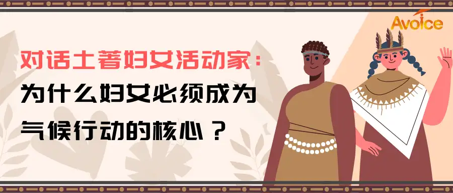
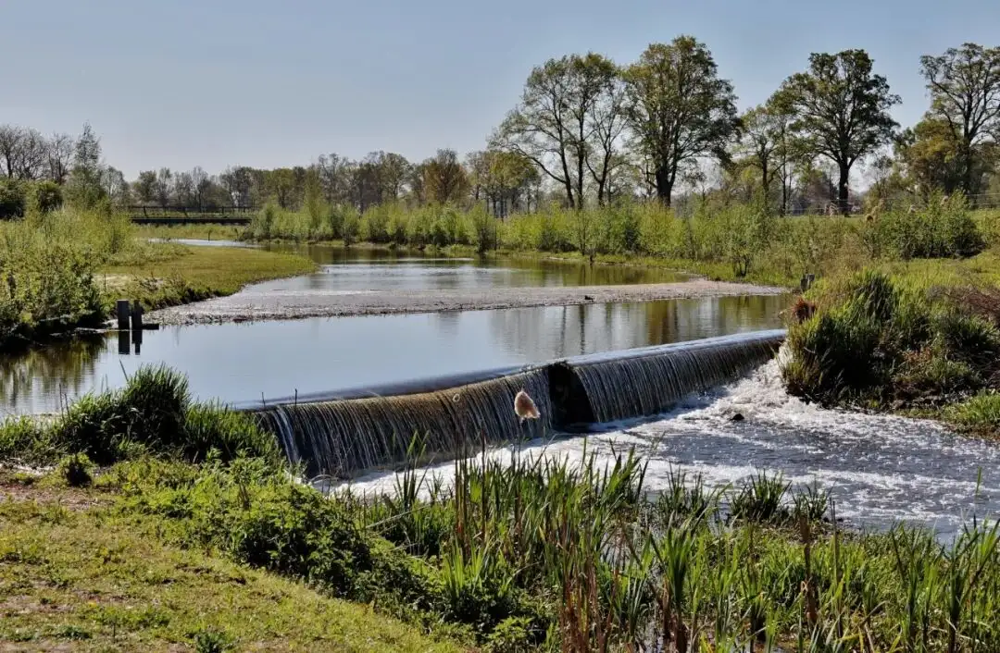
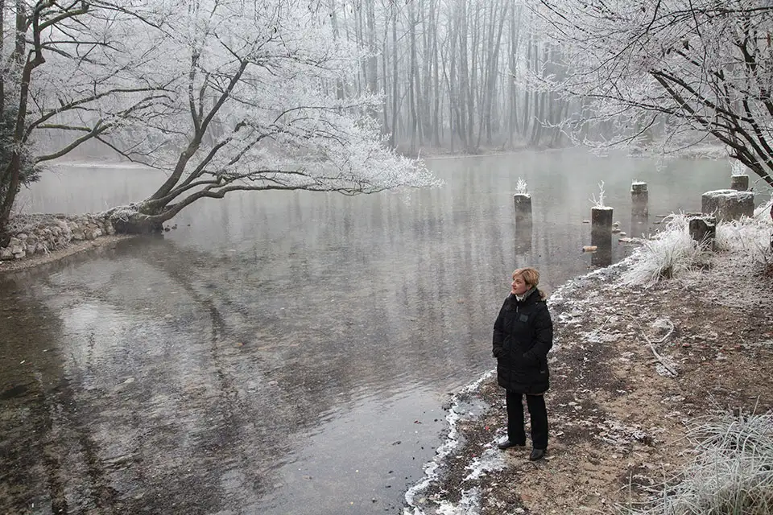
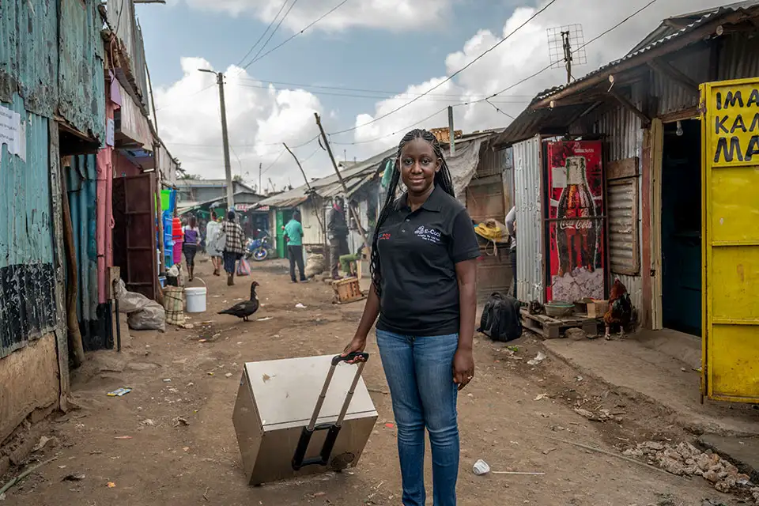
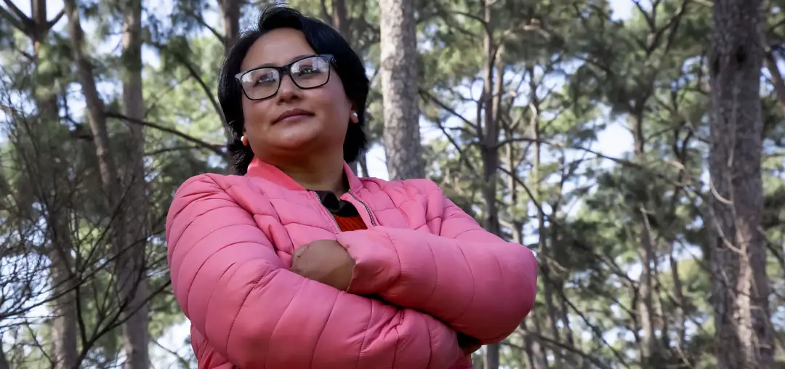
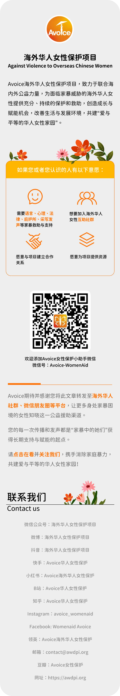

引言
根据联合国的数据，妇女和儿童在自然灾害中死亡的可能性比男性高14倍。妇女特别容易受到气候变化的影响，尤其因为她们往往承担着为家庭提供水、食物和燃料以及照顾他人的社会角色。这种不平等也与她们面临的不公正有关，包括基于性别的暴力和缺乏获得信息的机会。
妇女最先受到气候变化的影响，她们也是拥有最多知识和最多力量来动员对抗气候变化的群体。遗憾的是，现今，让女性参与进气候治理的行动仍然是片面和有失偏颇的，这是实现气候正义的主要障碍。
原稿件来源于联合国妇女署。联合国妇女署将妇女平等的基本问题置于优先工作领域。
以下文章由Avoice语言支持团队的法语组成员翻译，希望能让更多人了解到土著妇女参与进气候行动的重要意义。
Part
1
为什么妇女必须成为气候行动的核心？

当今受气候变化影响最大的人，即妇女、女孩和边缘化社区的成员，必须参与应对气候变化的行动的计划和实施，以平等地共享权益。
由于妇女拥有独一无二的知识和经验，在基层尤其如此，她们参与决策过程对于有效的气候行动至关重要。 2019年的一项研究表明，增加国家立法机构中的妇女代表人数会使气候变化政策更加有力，从而减少排放。在基层，妇女参与自然资源管理与更完善的资源治理和保护密切相关。
增加妇女获得生产资源的机会可以提高农业生产水平和粮食安全水平，还可以减少二氧化碳的排放。如果所有女性小农都能平等地获取生产资源，她们的农产量将增加20%-30%，1-1.5亿人将免遭饥饿。农业产量的增加可以缓解土地上的森林遭到滥伐的压力，从而减少额外排放。

* Senka Barudanovic是波斯尼亚和黑塞哥维那萨拉热窝大学科学系的生态学教授
图片来源: 联合国妇女署/Rena Effendi
在工作领域，女性的领导力与提高气候影响的透明度相关。公司董事会中的高比例的女性表明其与碳排放信息的披露呈现正相关关系。
应对气候变化能采取有效的集体行动，需要我们生产和衡量经济价值的方式发生重大转变。逐步淘汰以化石燃料为基础的采掘业和经济，能为女性创造新的就业和技能锻炼的机会。扩大对医疗保健部门的投资是突出集体福利和在不增加排放的情况下加强经济的有效方式。
最后，性健康和生殖健康及权利是气候行动中性别平等的关键。 通过加强卫生保健系统以满足当前对性健康和生殖健康服务的需求，各国可以保障在环境和生物多样性保护、适应变化和改善健康、教育和性别平等领域的气候变化方面取得的最新进展。
Part
2
将性别平等置于气候变化解决方案中
意味着什么？
想要将性别平等置于气候变化的解决方案中，我们需要将不同的性别观点纳入减少气候、环境和灾害风险的整体和可持续的政策与方案中。
妇女和女孩全程平等地参与决策过程是应对气候变化的首要任务。今天没有性别平等，一个可持续的、更加平等的未来仍然遥不可及。
气候变化的解决方案还必须包括改进并投资对性别问题有敏感认识的统计和数据，以放大性别和气候之间的关系，确保土地权利得到增进与维护，并推动由妇女领导和以妇女为中心的可持续解决方案，特别是土著和当地基于自然的解决方案、资源管理和粮食生产活动。
在厄瓜多尔安第斯山脉的帕拉莫（paramo）生态系统中，当地妇女正在利用可持续农业生产和景观管理来恢复因多年的荒漠化和过度放牧而被削弱的生态系统。这些现象使大片的土地变得荒芜。妇女采取的行动也有助于消除性别偏见，并使妇女有能力为其社群的决策过程作出贡献。联合国妇女署驻厄瓜多尔代表比比亚娜·艾多（Bibiana Aido）表明：“帕拉莫项目向我们表明，没有妇女，就不可能谈及气候变化和可持续发展的解决方案。”

* Norah Magero与Vaccibox合影，这是一个创新的太阳能冰箱，由她的组织Drop Access利用当地现有材料制作
图片来源：RAEng/GGImages/Alissa Everetti
最后，气候变化的解决方案必须采取顾及到性别平等的融资方式。来自肯尼亚的机械工程师和可再生能源专家诺拉·玛格罗（Norah Magero）主张：“妇女领导的行动必须得到充分和公平的资助，以实现更公平、更生态的社会转型。”
为了确保一个更可持续的未来，我们需要投资于改善可再生能源和清洁能源的技术，并促进妇女参与其开发与使用。诺拉·玛格罗鼓励大家： “承认、赞扬、宣传和鼓励那些一贯倡导促进公平、注重性别和公正的气候变化行动的勇敢的妇女们。”
Part
3
用卡马拉·塔帕的话来说：要将土著妇女和我们的社区置于气候行动的中心
卡马拉·塔帕 (Kamala Thapa) 是一名 39 岁的马加尔土著妇女，她是位于尼泊尔加德满都的非政府组织--土著人民研究与发展中心的土著人民和当地社区负责人。
卡马拉·塔帕：“如果我们想建立一个公正、公平和可持续的未来，我们必须将土著妇女和我们的社区置于气候行动的中心。
无论她们生活在高山还是平原，尼泊尔的土著社区世代以来都过着可持续的生活。我们与自然和谐相处的生活方式是基于我们本土的文化和精神价值观以及我们的集体决策。长期以来，我们一直在利用我们的传统知识和惯例来维护尼泊尔森林、草原和海洋环境的生物多样性。

* 卡马拉-塔帕在尼泊尔的巴克塔普尔
图片来源：联合国妇女署/Uma Bista
尽管如此，土著妇女很少参与进与可持续发展和气候行动相关的决策过程。这对土著妇女和土著知识产生了负面的后果和严重的影响。
例如，面对气候变化，政府逐步划定了‘保护区’，目前已经覆盖了尼泊尔四分之一以上的国土。当一个‘保护区’被指定时，土著社区就会被逐出其祖传地界。然而，由于土著人民的生计和文化生存依赖自然资源，土著妇女继续返回到自己的土地上采集野菜、柴火、饲料和药用植物。于是，土著妇女受到了部署在保护区的安全部队的威胁、骚扰和暴力。
这个例子表明，不以土著妇女和我们的社区为中心的气候变化政策和法律可能弊大于利。构成我们祖先土地的生态系统不需要‘保护’——我们已经世代保存和维护了它们。
环境保护政策和法律如果能够促进土著知识和文化的普及以应对气候变化，将更加有效。如果不能做到这一点，它们可能会进一步边缘化资源消耗和温室气体排放量最低的土著社区。
经过土著活动家和自然资源专家数十年的行动，我们终于开始看到进步。我所在的组织与我们的社区就影响我们土地的项目切实进行了初步协商。但根据《联合国土著人民权利宣言》，我们要求在采取立法或行政措施之前，应充分征得土著社区的自由、事先和知情同意。
土著人民是土地的传统监护人，我们的生活方式是建立在为子孙后代保护生物多样性的基础之上。这是气候行动取得成功的重要组成部分。尼泊尔的土著妇女是其土地和环境的知识库，只有承认、尊重并利用好这些知识，我们才能共同实现气候公平和所有人的可持续发展。”
原文标题：
“Pourquoi les femmes doivent être au cœur de l’action climatique”
“Où je me tiens : « Placer les femmes autochtones et nos communautés au centre de l’action climatique »”
原文链接：
https://www.unwomen.org/fr/nouvelles/article-explicatif/2022/03/pourquoi-les-femmes-doivent-etre-au-coeur-de-laction-climatique
https://www.unwomen.org/fr/nouvelles/ou-je-me-tiens/2022/03/ou-je-me-tiens-placer-les-femmes-autochtones-et-nos-communautes-au-centre-de-laction-climatique
翻译 I 王含泊、杨海凝、岳家乐
审校 I 胡万欣、周楚迪
排版/封面 I 游舸
图片来源 I freepik


